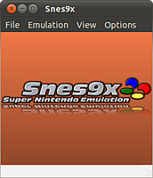
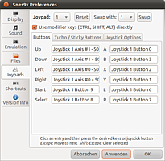
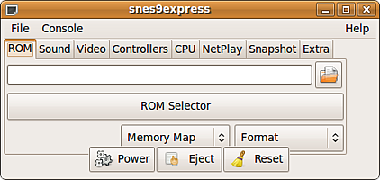

Snes9x
Archivierte Anleitung
Dieser Artikel wurde archiviert, da er - oder Teile daraus - nur noch unter einer älteren Ubuntu-Version nutzbar ist. Diese Anleitung wird vom Wiki-Team weder auf Richtigkeit überprüft noch anderweitig gepflegt. Zusätzlich wurde der Artikel für weitere Änderungen gesperrt.
Zum Verständnis dieses Artikels sind folgende Seiten hilfreich:
Snes9x  ist ein Super Nintendo Emulator. Snes9express ist eine graphische Oberfläche, die zur Konfiguration und zum Starten von Snes9x verwendet werden kann. Da sie die einzige Snes9x-Oberfläche in den Paketquellen ist, wird hier von der Benutzung von Snes9express ausgegangen.
ist ein Super Nintendo Emulator. Snes9express ist eine graphische Oberfläche, die zur Konfiguration und zum Starten von Snes9x verwendet werden kann. Da sie die einzige Snes9x-Oberfläche in den Paketquellen ist, wird hier von der Benutzung von Snes9express ausgegangen.
Installation¶
Die Installation geschieht über das Paket [1]
snes9x-gtk (multiverse, ab Lucid)
 mit apturl
mit apturl
Paketliste zum Kopieren:
sudo apt-get install snes9x-gtk
sudo aptitude install snes9x-gtk
Danach lässt sich der Emulator über "Anwendungen -> Spiele" starten.
Hinweis:
|  |  |
| snes9x | Einstellungen |
Benutzung¶
Snes9x¶
Die Konfiguration erreicht man über "Options -> Preferences...". Dort kann unter anderem die Steuerung festgelegt werden. Über "File -> Open ROM Image" kann eine ROM-Datei (.smc) geöffnet werden.
snes9express¶
Nach der Auswahl einer ROM-Datei (.smc) im Reiter "ROM" genügt ein Klick auf den "Power"-Knopf, um das Spiel zu starten.
Tastaturbelegung¶
Die Tasten der Tastatur werden wie folgt den SNES-Tasten zugeordnet:
| Steuerung | |||
| Taste | SNES-Taste | Taste | SNES-Taste |
| ← , ↑ , → , ↓ | links, hoch, rechts, runter | ||
| S | X | D | A |
| X | Y | C | B |
| A oder V | L | Z | R |
| ⏎ | Start | Select | |
Die weitere Belegung kann in der Datei /etc/snes9x/snes9x.conf eingesehen [2] und mit Root-Rechten verändert werden.
Konfiguration¶
Die meisten Konfigurationsmöglichkeiten sind selbsterklärend und müssen normalerweise auch nicht verändert werden. Hier die ein oder andere nützliche Option:
Kantenglättung¶
Der "TV-mode" (im Reiter "Video") hat deutlichen Einfluss auf die Bildqualität. Bei der Einstellung "Super 2xSAI" werden die Kanten recht schön geglättet.
|  |
| snes9express |
Problemlösungen¶
Kein Sound¶
Snes9x verwendet das Soundtreibersystem OSS. Wenn kein Sound zu hören ist, muss der Sound manuell durch den Soundserver PulseAudio geroutet werden. Das geschieht, indem man Snes9express über den Befehl
padsp snes9express
im Terminal [3] startet.
- Erstellt mit Inyoka
-
 2004 – 2017 ubuntuusers.de • Einige Rechte vorbehalten
2004 – 2017 ubuntuusers.de • Einige Rechte vorbehalten
Lizenz • Kontakt • Datenschutz • Impressum • Serverstatus -
Serverhousing gespendet von